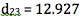
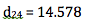

In a Stroop task, participants are presented with a list of words, with each word displayed in a color of ink. The participant's task is to say out loud the color of the ink in which the word is printed. The task has two conditions: a congruent words condition, and an incongruent words condition. In the congruent words condition, the words being displayed are color words whose names match the colors in which they are printed: for example RED, BLUE. In the incongruent words condition, the words displayed are color words whose names do not match the colors in which they are printed: for example PURPLE, ORANGE. In each case, we measure the time it takes to name the ink colors in equally-sized lists. Each participant will go through and record a time from each condition.
- Independent: Congruency (or incongruency) of the words with the ink color.
- Dependent: The amount of time required for participants to name the ink colors.
A dependent (within-subject) t-test was chosen because the same participants took both tests.
Note: The sample size was reduced from 24 to 22 because two entries qualified as outliers. The removal of the last two values of difference in time sorted by ascending values resulted in an approximate normal distribution for the rest of the sample data. This is shown in Question 4.
Note: Sample means calculated with sample size 24 and difference in mean calculated with sample size 22 after eliminating outliers as noted above.

Figure 1, above, shows that the sample data series contains two outliers that disqualify it from t-test analysis. The sample data should have an approximate normal distribution for accurate result analysis. The outliers were identified using the interquartile range (IQR) and the last two values were eliminated from the analysis.
The outlier range was calculated in the following way:
(5.7, 9.356)
Therefore,  and  were eliminated from the sample dataset. Please refer to the reference section for full calculations and details.
The sample dataset has a normal distribution with mean 7.44, as shown above in Figure 2.

and found to be: t = 64.17
Using the critical level identified above, 95% confidence interval, the t-critical values corresponding with = 0.05 and 21 degrees of freedom are: t = (-2.080, 2.080).
Considering a t-statistic of t = 64.17 against the t-critical value of 2.080, the p-value of obtaining t within this distribution is 0.00%. This result is statistically significant; therefore, reject the null hypothesis.
The paired dependent t-test study measuring the Stroop Effect perceptual phenomenon by recording and comparing the amount of time participants took reading aloud the color of text from a congruent and incongruent list concludes that incongruency between word and text color results in a statistically significant increase in time. This increase cannot be attributed to statistical error because the t-statistic is many multiples greater than the critical value.
This conclusion matches my expectation.
Another theory is that the reading "pathway" in the brain is stronger than the color recognizing "pathway" because of more frequent use. When a request is made of the weaker pathway with interference from the stronger one (reading incongruent colored words), a lag is created in the response (Parallel distributed processing).
A task that would result in a similar effect is performing two different motions at the same time. For example, participants would be asked to pat the top of their head with one hand and pat their stomach with the other to a specific rhythm. Then participants would be asked to pat the top of their head with one hand while rubbing their stomach with the other. The error in maintaining the tap would be the dependent variable.